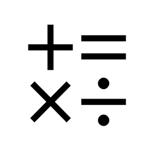

隐私政策
简洁计算器
一句话版本
简洁计算器完全离线：不发起任何网络请求，不收集、不上传、不分享任何数据， 也不包含任何统计、广告或追踪组件。你的历史记录与标签收藏只保存在设备本机， 卸载 App 即彻底删除。
1. 我们收集哪些信息
我们不收集任何信息。本 App 不要求注册或登录，不建立用户账号，不进行用户画像或 跨应用追踪，不包含任何统计、广告、崩溃上报或分析类的第三方组件，因此不会向开发者 或任何第三方传输你的使用数据。
2. 数据存在哪里
App 产生的全部数据均保存在设备本机的 App 沙盒容器内（Application Support 目录）， 仅包括以下两类：
- 历史记录（自动保留最近 3 条）；
- 标签收藏（名称、用途符号与对应表达式）。
这些数据没有服务器副本，不会同步到其他设备，也无法被其他 App 读取。卸载 App 时， 上述数据随沙盒容器一并删除。若你从旧版简洁计算器升级，首次启动会读取旧版数据文件 并导入为当前格式，旧文件在本机归档，同样不会离开设备。
3. 联网行为
App 不发起任何网络请求：无数据上传、无更新检查、无远程配置、无遥测。 App 的全部功能（包括计算、历史、收藏与按键朗读）均在设备本地完成。
4. 设备标识
App 不读取、不生成、不存储任何设备标识符（包括广告标识符、随机标识符或其他 可用于识别设备的信息）。
5. 系统权限
App 不申请任何系统权限：不访问相机、相册、麦克风、定位、通讯录或通知。 可选的按键朗读功能使用系统内置的语音合成能力，该能力无需权限授权，朗读在设备本地 完成，不会录制或上传任何音频。
6. 第三方组件
App 不包含任何第三方统计、广告或追踪 SDK；除操作系统与系统框架外， 全部代码为本 App 自研，随包不携带任何具备联网能力或数据采集能力的组件。
7. 购买与订阅
App 为免费应用，不含广告，也不提供任何应用内购买或订阅，开发者因此无法接触 任何支付信息。若未来引入付费功能，我们将在本页更新相应说明并修订生效日期。
8. 数据保留与删除
你的数据只保存在本机，由你完全控制：
- 历史记录随计算自动滚动更新，只保留最近 3 条；
- 标签收藏可在 App 内左滑删除，重命名与修改随时进行；
- 卸载 App 将删除沙盒容器内的全部数据，且无任何服务器副本残留。
由于我们不收集任何数据，不存在需要向开发者申请删除的服务器记录。 如对数据问题有疑问，可通过下方联系方式与我们沟通。
9. 儿童隐私
App 不收集任何用户数据，因此也不收集儿童数据。App 不包含针对儿童的广告或 不当内容。
10. 政策变更
若本政策的适用范围发生变化（例如未来版本引入联网或付费能力），我们会修订本页内容 并更新顶部的生效日期；重大变更会同步体现在 App Store 的版本说明中。建议你在每次 更新 App 后查阅本页的最新版本。
11. 联系我们
对本政策或数据处理有任何疑问，请发送邮件至 kenshinliu@126.com，我们会在收到邮件后尽快回复。